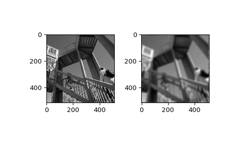

scipy.ndimage.fourier_ellipsoid¶
-
scipy.ndimage.fourier_ellipsoid(input, size, n=-1, axis=-1, output=None)[source]¶ Multidimensional ellipsoid Fourier filter.
The array is multiplied with the fourier transform of a ellipsoid of given sizes.
- Parameters
- inputarray_like
The input array.
- sizefloat or sequence
The size of the box used for filtering. If a float, size is the same for all axes. If a sequence, size has to contain one value for each axis.
- nint, optional
If n is negative (default), then the input is assumed to be the result of a complex fft. If n is larger than or equal to zero, the input is assumed to be the result of a real fft, and n gives the length of the array before transformation along the real transform direction.
- axisint, optional
The axis of the real transform.
- outputndarray, optional
If given, the result of filtering the input is placed in this array. None is returned in this case.
- Returns
- fourier_ellipsoidndarray
The filtered input.
Notes
This function is implemented for arrays of rank 1, 2, or 3.
Examples
>>> from scipy import ndimage, misc >>> import numpy.fft >>> import matplotlib.pyplot as plt >>> fig, (ax1, ax2) = plt.subplots(1, 2) >>> plt.gray() # show the filtered result in grayscale >>> ascent = misc.ascent() >>> input_ = numpy.fft.fft2(ascent) >>> result = ndimage.fourier_ellipsoid(input_, size=20) >>> result = numpy.fft.ifft2(result) >>> ax1.imshow(ascent) >>> ax2.imshow(result.real) # the imaginary part is an artifact >>> plt.show()
